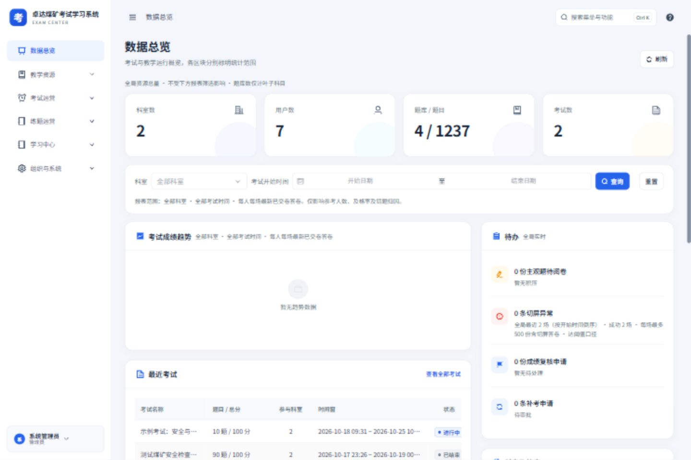
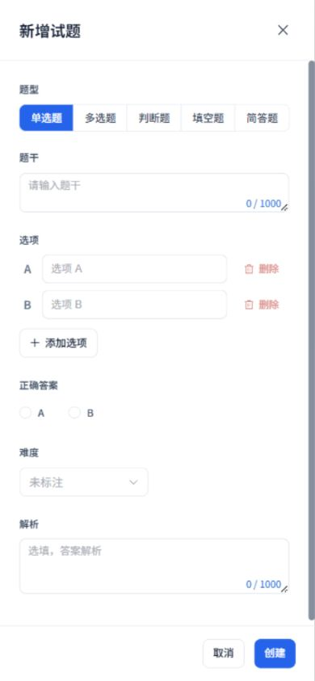

EXAM CENTER · 2026-10-19
管理端 UI 验收记录
此为上一轮样式与流程记录；全局框架的后续结构修正见 最新设计对照与实际截图。
实际程序已统一为白侧栏、浅灰蓝底、蓝色操作与 16 px 圆角卡片。本轮复查剩余页面、弹窗、窄屏布局与加载失败状态，保留原有题型、权限、考务及账号安全能力。
25 × 3入口页面 · 三档尺寸共 75 次检查
21本轮打开核查的弹窗与抽屉场景
7系统设置分组逐一检查
410前端回归用例 · 52 个测试文件
实际程序截图




页面逐项检查
检查尺寸：1440 × 960、768 × 1024、390 × 844。结果为页面主体无横向溢出；宽表格在表格内部横向滚动。
| 页面 | 桌面 | 平板 | 手机 |
|---|
弹窗、抽屉与次级流程
组织、角色与安全
- 新建用户、账号批量导入、新建科室
- 科目与访问权限、角色编辑、成员分配、岗位
- 账号安全、修改密码：仅查看布局；安全操作使用模拟请求验证
题库与考试
- 试题编辑、简答评分细则、试题迁移
- 组卷参数模板、人员抽考模板
- 考试生效名单、特殊考试安排；另复查实时监考
内容与审计
- 新建公告、轮播图、内容触达概览
- 审计导出字段、日志详情
- 长表单滚动、固定底栏、窄屏局部表格滚动
设置全部分组
- 考试默认值、作答与防作弊、阅卷与复核
- 账号与安全、通知与模板、数据与归档
- 网站与品牌；切换分组未修改或保存业务配置
本轮修复
- 考试生效名单、角色成员、题库迁移及账号安全增加加载、失败重试和统一空状态；快速切换只接受最新请求的数据。
- 科目原权限读取失败时阻止覆盖；创建成功但权限保存失败时，重试沿用同一节点，不生成重复科目。
- 密码、试题与权限相关表单提交期间禁用重复操作及关闭，接口失败后保留草稿。
- 修复手机端科目提示与开关挤在一行、五种题型换行、长安全表单及评分档位的布局问题。
- 审批或删除导致末页消失时回到有效页；同类考试详情切换时重新初始化表单及监控连接。
- 无已出成绩样本时平均分显示“—”；真实零分仍显示 0。旧答卷缺少及格线时保持未知，不误判未及格。
- 消息中心入口跟随已有菜单权限显示；原有服务端权限、五种题型、阅卷、复核、补考、防作弊、TOTP、恢复码与设备管理保持原有规则。
验证结果与范围
前端 410 项测试通过 类型检查通过 生产构建通过 差异格式检查通过
失败重试、旧响应隔离、重复提交、内置角色限制、五种题型及安全表单使用模拟接口验证。现有数据库缺少已交卷、待复核等完整样本，相应成功处理路径由回归用例覆盖，未写入虚构统计或修改真实业务记录。
开发环境与证据
本地开发服务在批量导航时出现过两次动态模块请求失败，均通过页面自带“重新加载”恢复后重测成功；失败状态未计为页面通过。生产构建已完成。本轮没有改动后端接口或数据库，也没有实际执行改密、授权、设备下线、删除或考务审批。
日志保存在工作区忽略目录：.build-verify/admin-ui-final-tests.log、.build-verify/admin-ui-final-types.log、.build-verify/admin-ui-final-build.log。